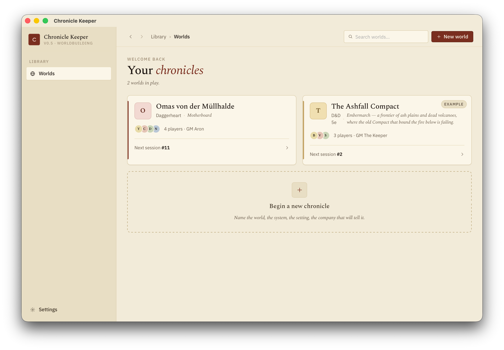
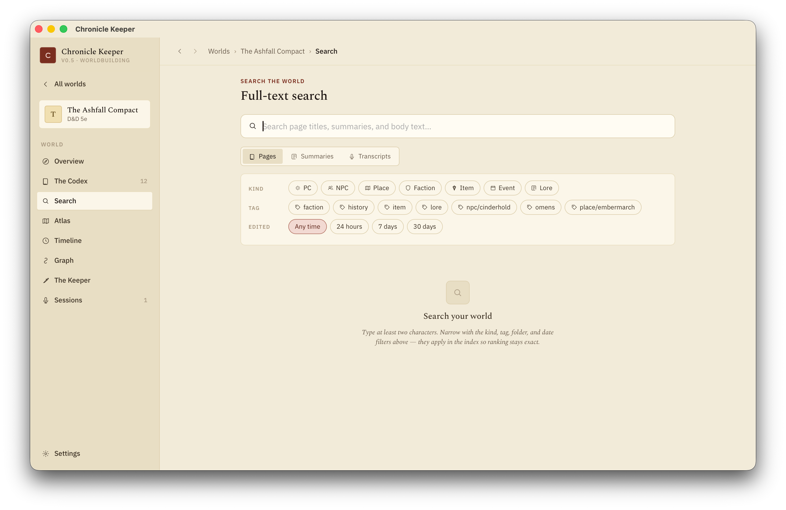

Worlds & pages
A world is a folder of Markdown pages on your disk — your campaign wiki, fully yours. Chronicle Keeper reads and writes those files directly; everything else is a rebuildable cache.
Files are truth
Each world is one self-contained, portable folder. Pages are plain .md files you could open in any text editor — Chronicle Keeper is the comfortable way to work with them, not a lock-in. The app keeps a fast index alongside the files (full-text search, links, tags), but that index is derived: delete it and it rebuilds from the files. Your words live in the files.
Codex/ — your wiki pages. Sessions/ — recordings, transcripts and summaries. Assets/ — images and files you embed. Inbox/ — quick captures. .ck/ — config, the index cache, templates, history and trash. Back the folder up, sync it with your own tool, or move it to another machine — it just works.
Creating or opening a world
From the New-World screen you can create a fresh world (empty, or seeded with a starter template) or open an existing folder in place — including an Obsidian vault you already keep. Opening adopts the folder as-is; nothing is moved or rewritten. Worlds are discovered by their .ck/config.toml, so you can keep several side by side.

Each world opens to an Overview: the story so far, the party, and a peek at the codex.

Pages
A page is Markdown for the body plus a little YAML frontmatter at the top for the structured bits:
---
kind: npc
summary: Gruff dwarven smith who owes the party a favour.
aliases: [Bram, The Smith]
tags: [ashfall, allies]
location: "[[Ashfall]]"
---
# Bram Ironhand
Bram keeps the only forge in [[Ashfall]]…summary:— the one-liner the AI remembers. This single line is what gets injected into prompts when other features mention this page, so keep it crisp.kind:— what the page is:pc,npc,place,faction,item,lore,event, or your own custom kinds. Kind drives the infobox and the icon.aliases:— other names this page answers to, so wikilinks and search find it.tags:— free-form labels for filtering and queries.

Wikilinks & backlinks
Connect pages with [[Name]]. Links are alias-aware and case-insensitive, so [[bram]] finds Bram Ironhand. Point at a heading with [[Page#heading]], or relabel with [[Page|the old smith]]. Link to a page that doesn't exist yet and Chronicle Keeper offers to create it.
Every page shows a Linked-from panel — who points here — so the web of your world is always navigable in both directions. Rename or move a page and every link to it is rewritten automatically.
Infoboxes & kinds
Each kind has a small field schema — the labelled box on the right of a page (an NPC's race and age, a place's ruler, and so on). Fields can be text, lists, numbers, checkboxes or dates. Add your own fields per kind, or invent whole new kinds, in .ck/config.toml:
[kinds.npc]
fields = ["race", "age:number", "status"]
[kinds.ship]
fields = ["captain", "crew:number", "home_port"]
Templates & new pages
Creating a page (⌘N, the Explorer's + menu, or the command palette) asks for a title and a kind, then starts you from that kind's template — a sensible heading skeleton (an NPC gets Appearance / Motivation / Relationships / History, a place gets At a glance / Notable people / Hooks, and so on). Templates live in .ck/templates/<kind>.md and are yours to edit; once you've touched one, the app never overwrites it.
Capture now, shape later
Jotting fast? Drop a rough note and promote it later: pick a kind and Chronicle Keeper rewrites the frontmatter, fills in the missing schema fields, appends the kind's template headings, drops the #inbox tag, and (optionally) files it in the right folder — links and all. Capture stays frictionless; structure comes when you're ready.
Bringing in existing notes
Already have lore? Two routes:
- Open an Obsidian vault in place — adopt the whole folder, links intact.
- Paste-import — drop in a wall of notes and an LLM distills them into clean, kinded pages. You preview the proposed pages and commit the ones you want; nothing existing is ever overwritten.
Finding things
Press ⌘K for the command palette: jump to any page by name or alias, run a full-text search, filter by tag, hop to recents, or fire an action. The dedicated Search screen adds facets — narrow by kind, tag, folder, or edited-date, and toggle scope between pages, session summaries and transcripts.

History, trash & backups
Everything is reversible, and the AI's edits are auditable.
- Version history — every save snapshots the page first, tagged by who made it (you or the Keeper). See a line-by-line diff of any version and restore it. "The Keeper changed 12 pages — show me" is a single filter.
- Trash — deleted pages and folders land in the world's trash, restorable for 30 days before auto-pruning. Nothing vanishes by accident.
- Backups — zip the whole world to a
Backups/folder on demand, and automatically when you close the app. The newest ten are kept.
Write a tight summary: on the pages that matter. It's the line the Keeper and the summarizer carry around in their head — a good one-liner makes every AI feature noticeably sharper.